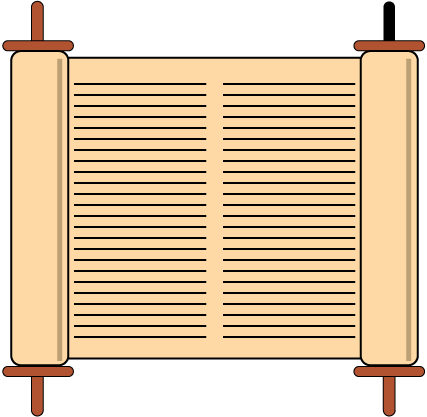
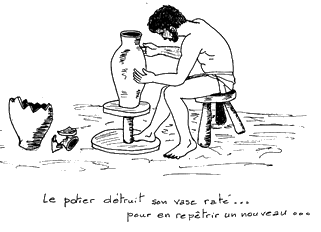
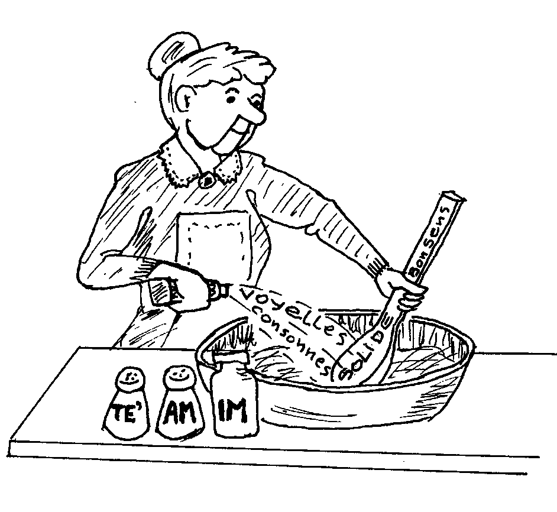

<div><!-- Debut entete -->
  <center>
   <table align="center">
    <colgroup>
      <col width="40%">
      <col width="70">
      <col width="40%">
    </colgroup>
    <tbody>
      <tr>
        <td dir="rtl" align="center">
          <h1>×~ָסַרְתִּ×"...</h1>
        </td>
        <td><br></td>
        <td dir="rtl" align="center">
          <h1>קִ×Ö·Ö¼×Sְתִּ×"...</h1>
        </td>
      </tr>
      <tr>
        <td align="center">
          ( <i>masarti</i> = «&nbsp;j'ai transmis ...&nbsp;» )
        </td>
        <td><br></td>
        <td align="center">
          ( <i>qibbalti</i> = «&nbsp;j'ai reçu ...&nbsp;» )
        </td>
      </tr>
    </tbody>
   </table>
  </center>

  <br><br><br>

  <table width="100%">
    <tbody>
	  <tr>
	    <td>
          <div>

      &nbsp;&nbsp;&nbsp;&nbsp;&nbsp;&nbsp;Ce principe, fondamental pour Yehuda ha-Nasi et tous les Sages de la tradition rabbinique
    <span class="tooltip">[ mishnah <i>Avot</i> 1:1 ]<span class="tooltiptext">
      «&nbsp;Moïse reçut [<span dir="rtl">ק×"××S</span> ,<i>qibbél</i>] la Torah du Sinaï et la transmit
      [<span dir="rtl">×"×~סר×</span>, <i>û-maserah</i>] à Josué&nbsp;; et Josué aux Anciens&nbsp;;
      et les Anciens aux prophètes&nbsp;; et les prophètes la transmirent
      [<span dir="rtl">×~סר×"×</span>, <i>maserûha</i>] aux hommes du Grand Synode...&nbsp;»<br>
      <div align="right"><small>[Mishnah Avot 1:1 ; Verdier, <i>les dix paroles</i>, 2015]</small>&nbsp;</div>
    </span></span>
    et
    <span class="tooltip">[ 1&nbsp;<i>Corinthiens</i> 15:34 ]<span class="tooltiptext">
      «&nbsp;Je vous ai transmis [À±Áέ´Éº±, <i>parédôka</i>]
      en premier lieu ce que j'avais reçu [À±Áέ»±²¿½, <i>parélabon</i>]
      moi-même&nbsp;: Christ est mort pour nos péchés, selon les Écritures.
      Il a été enseveli, il est ressuscité le troisième jour, selon les Écritures...&nbsp;»<br>
      <div align="right"><small>[1ère lettre aux Corinthiens 15:3-4 ; TOB 1988]</small>&nbsp;</div>
    </span></span>,
    me semble valable aussi pour ceux qui veulent étudier l'hébreu biblique.
    <br><br>
    &nbsp;&nbsp;&nbsp;&nbsp;&nbsp;&nbsp;Avec ce principe, on peut parfaitement éviter la momifiante fixité d'une fidélité littérale et vivre un renouvellement permanent dans la compréhension du contenu étudié et de ses significations.
		  </div>
		  </td>
		<td width="321">
		  
		</td>
      </tr>
    </tbody>
  </table>

  <br><br><br>

  &nbsp;&nbsp;&nbsp;&nbsp;&nbsp;&nbsp;En adoptant l'attitude de l'artisan potier :
  <br><br>

  <div>
    <center>
     <table style="text-align: left; width: 759px; height: 244px;" border="1" cellpadding="2" cellspacing="2">
      <tbody>
       <tr>
        <td>
         <center>
          <big><big><big>
            ×"Ö°×&nbsp;ִשְ×�×ַת ×Ö·×:Ö°Ö¼×SÖ´×" ×�ֲשֶ×�ר ××"Ö¼×� עֹשֶ×× ×Ö·Ö¼×Ö¹×~ֶר ×Ö°Ö¼×"Ö·× ×Ö·×"Ö¼×"ֹצֵÖר ×"ְשָ×�× ×"Ö·×"ַּעֲשֵ×××"Ö¼ ×:Ö°Ö¼×SÖ´×" ×�Ö·×ֵר ×:Ö·Ö¼×�ֲשֶ×�ר ×"ָשַ×�ר ×Ö°Ö¼×¢Öµ×"×&nbsp;Öµ×" ×Ö·×"Ö¼×"ֹצֵר ×Sַעֲש××"ֹתג
            <br>
          </big></big>
          (Jérémie 18:4)
          </big>
         </center>
         <br>
         «&nbsp;Et si le plat qu'il formait de l'argile était gâché dans ses mains, alors le potier recommençait et formait un autre plat, comme il est bon que fasse un potier.&nbsp;»
        </td>
        <td>
          
        </td>
       </tr>
       <tr>
        <td colspan="2">
         <center>
          Traduction de François BON et Léo LABERGE dans «&nbsp;La Bible, nouvelle traduction&nbsp;» (Bayard, Paris, 2001), choisie, je l'avoue, parce qu'elle «&nbsp;colle&nbsp;» mieux que d'autres au sens de mon propos.
         </center>
        </td>
       </tr>
      </tbody>
     </table>
    </center>
  </div>

  <br><br>

  <div class="entete-intro">
    &nbsp;&nbsp;&nbsp;&nbsp;&nbsp;&nbsp;J'ai, pendant plusieurs dizaines d'années, beaucoup reçu (<span dir="rtl">קִ×Ö·Ö¼×Sְתִּ×"</span>) de divers enseignants, en direct ou grâce à leurs écrits récents ou posthumes, et souvent essayé de transmettre (<span dir="rtl">×~ָסַרְתִּ×"</span>) à d'autres le mieux possible.
    <br>
    &nbsp;&nbsp;&nbsp;&nbsp;&nbsp;&nbsp;C'est le but de ce petit site-web&nbsp;: partager non seulement ce que j'ai reçu, mais aussi le plaisir du potier qui met toute son inventivité et sa rigueur au service d'une transmission la plus fidèle possible du trésor qu'il a lui-même reçu.
    <br><br>
    &nbsp;&nbsp;&nbsp;&nbsp;&nbsp;&nbsp;Avec toutes mes excuses pour les coquilles ou erreurs qui auraient pu échapper à ma vigilance.
  </div>

  <br><br>

  <!-- â"�â"� SECTION : Vous trouverez dans ce site â"�â"�â"�â"�â"�â"�â"�â"�â"�â"�â"�â"�â"�â"�â"�â"�â"�â"�â"�â"�â"� -->
  <div class="entete-section-titre">Vous trouverez dans ce site&nbsp;:</div>

  <!-- Partie 1 : cours de grammaire ⬠texte gauche, image droite -->
  <div class="entete-bloc">
    <div class="entete-bloc-texte">
      <p>⺠Un petit cours de grammaire intitulé&nbsp;:
        <strong>Ã0léments de base pour une grammaire de l'hébreu</strong>
      </p>
      <br>
      <p>⺠<strong>Un gros dossier sur le verbe en hébreu</strong></p>
      <p>Invitant Ã&nbsp; un dépaysement mental indispensable, car en hébreu, le verbe n'est pas
        <strong>une parole</strong>, ou un mot (en latin «&nbsp;<em>verbum</em>&nbsp;» = en grec
        «&nbsp;<em>logos</em>&nbsp;»), mais <strong>une action</strong>
        (<span dir="rtl">פֹּעָ×S</span> «&nbsp;<em>po'al</em>&nbsp;»).
      </p>
      <p>Ce dossier contient notamment&nbsp;:</p>
      <ul>
        <li>Ma présentation personnelle du système verbal&nbsp;:
          non pas défini rationnellement selon les concepts habituels (intensif, causatif, réfléchi...),
          mais décrit pratiquement comme l'assemblage de divers regards possibles sur l'action.</li>
        <li>Le précieux tableau des <em>binyanim</em>
          (<span dir="rtl">×Ö´Ö¼×&nbsp;Ö°×"Ö¸×x</span> <em>binyan</em> = «&nbsp;construction&nbsp;»)
          résumant clairement la manière dont la langue hébraïque organise ses verbes.</li>
      </ul>
      <br>
      <p>⺠<strong>Une présentation inhabituelle mais très efficace du système des <em>te'amim</em></strong>
        [<span dir="rtl">×ÜÖ·×¢Ö·×�</span> <em>ta'am</em> (sing.) = «&nbsp;goût, saveur, raison&nbsp;»&nbsp;;
        <span dir="rtl">×ÜÖ°×¢Ö²×~Ö´×"×�</span> <em>te'amim</em> (pl.) = «&nbsp;signes de cantilation de la Bible hébraïque&nbsp;»]&nbsp;:
        ingénieux système de signes codés (du 6<sup>e</sup> au 10<sup>e</sup> siècles par les Massorètes de Tibériade)
        pour guider la lecture du texte biblique.
      </p>
      <br>
      <p>⺠Mon mémoire sur le <strong><em>Waw conversif</em></strong> et la syntaxe de l'hébreu biblique</p>
    </div>
    <div class="entete-bloc-img">
      
      <div class="entete-legende"><em>Les petits secrets de<br>ma grand-mmaire</em></div>
    </div>
  </div>

  <br>

  <!-- Partie 2 : recherches ⬠titre fort, texte gauche, image droite -->
  <div class="entete-section-titre">⬦ et quelques unes de mes recherches dans l'un et l'autre testament&nbsp;:</div>

  <div class="entete-bloc">
    <div class="entete-bloc-texte">
      <p>⺠Des dossiers sur divers mots ou thèmes bibliques, notamment sur&nbsp;:</p>
      <ul>
        <li><a href="/Hebreu4.0/html/mots_et_themes_bibliques/des_mots_de_la_bible/les_noms_de_dieu_dans_la_bible/index.html">Les noms de Dieu dans la Bible</a></li>
        <li><a href="/Hebreu4.0/html/mots_et_themes_bibliques/des_mots_de_la_bible/misericorde_et_compassion.un_portrait_de_dieu/index.html">Miséricorde et compassion ⬠un portrait de Dieu</a></li>
		<li><a href="/Hebreu4.0/html/mots_et_themes_bibliques/des_mots_de_la_bible/les_entrailles,_objet_biblique_mal_identifie/les_entrailles_et_leurs_mysteres/index.html">Les entrailles et leurs mystères</a></li>
        <li>... des mots, des racines, ou des <a href="/Hebreu4.0/html/mots_et_themes_bibliques/index.html">thèmes bibliques</a></li>
      </ul>
      <br>
      <p>⺠Dans le dossier <strong>«&nbsp;chemins dans la tradition juive&nbsp;»</strong>,
        vous trouverez&nbsp;:</p>
      <ul>
        <li>de clairs et précieux tableaux sur les Sages des débuts de la tradition 
rabbinique : les <em>tanna'im</em>, les <em>amora'im</em> de Palestine et ceux de Babylonie</li>
        <li>plusieurs textes midrashiques très importants</li>
        <li>et quelques <a href="/Hebreu4.0/html/en_empruntant_quelques_chemins_dltj/chants_hebreux_et_yiddish._partitions/index.html">partitions de chants hébraïques</a> avec lien pour écoute sur YouTube</li>
      </ul>
      <br>
      <p>⺠Dans le dossier <strong>«&nbsp;promenades dans le Nouveau Testament&nbsp;»</strong>,
        vous trouverez notamment&nbsp;:</p>
      <ul>
        <li><a href="/Hebreu4.0/html/quelques_promenades_dans_le__nouveau_testament_/credo_et_hymnes_du_nt/index.html">L'élaboration du <em>Credo</em> Ã&nbsp; partir du nouveau testament</a></li>
        <li><a href="/Hebreu4.0/html/quelques_promenades_dans_le__nouveau_testament_/guerir_et_sauver_dans_les_evangiles/index.html">Guérison et salut dans le nouveau testament</a></li>
        <li><a href="/Hebreu4.0/html/quelques_promenades_dans_le__nouveau_testament_/le__notre_pere__et_sa_traduction/index.html">Le <em>Notre Père</em> et sa traduction</a></li>
      </ul>
    </div>
    <div class="entete-bloc-img">
      
    </div>
  </div>

  <br>


  <!-- Adresse mail en fin -->
  <div style="text-align: right; color: rgb(85, 85, 85); font-size: 0.95em;">
    Francis Boulanger (
    <a href="mailto:fraboulanger@orange.fr">fraboulanger@orange.fr</a>
    )
  </div>
  <br>

</div><!-- Fin entete -->